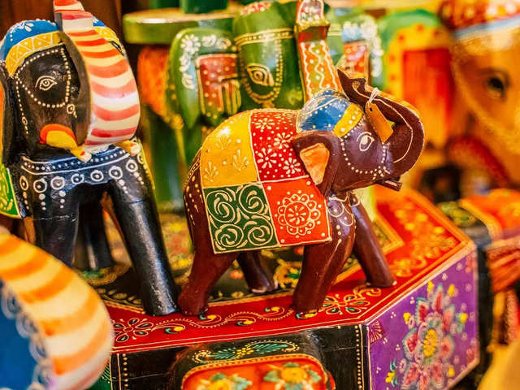
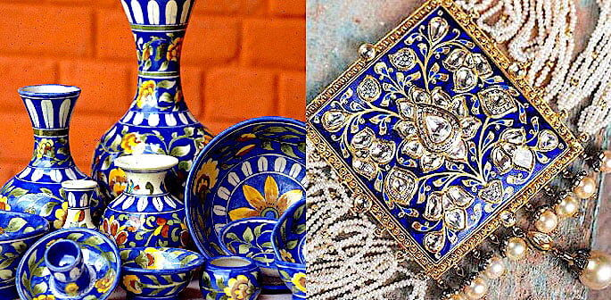

Exploring India and discovering its handicraft culture is like
opening the door to the cave of wonders with incredible
handmade items. We bring you some of these traditional
handicrafts, let’s learn their origins, and find out where to
source these from.

BLUE POTTERY
Blue pottery is a widely popular traditional craft from Jaipur,
Rajasthan. Although, the art originally has a Turko-Persian
background.
The name ‘Blue Pottery’ comes from a vibrant cobalt blue dye
colour that artists use for making articles.

RAJASTHANI PUPPET
A puppet is familiar in India as a kathputli. The name links
back with two Rajasthani language words, Kath meaning wood and
Putli, which means no life.
Kathputli means a puppet, which is completely made with wood. An
artist uses cotton and colourful clothes to make them look
stunning.